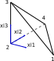

Principle of Virtual Mechanical Work
Variational formulation of the principle
ONSAS can be used to solve the set of nonlynear equations given by the Principle of Virtual Work (PVW). The PVW can be defined in terms of the following set of nonlinear equations:
\[\left( \mathbf{f}_{mas}(\mathbf{u}_t, \dot{\mathbf{u}}_t, \ddot{\mathbf{u}}_t) + \mathbf{f}_{vis}(\dot{\mathbf{u}}_t) + \mathbf{f}_{int}(\mathbf{u}_t) - \mathbf{f}_{ext}(t) \right) \cdot \delta \mathbf{u} = 0 \qquad \forall \delta \mathbf{u} \in \tilde{\mathcal{U}}\]
Solid Elements Implementation
Tetrahedron Solid Element
The tetrahedron element considered is a four-node linear element. The isoparametric coordinates reference element is shown in the following figure

and the linear shape functions are given by
\[N_1(\xi) = \xi_1 \quad N_2(\xi) = 1-\xi_1-\xi_2-\xi_3 \quad N_3(\xi) = \xi_3 \quad N_4(\xi) = \xi_2\]
The functions can be expressed in vector form
\[ \textbf{ N } = \left[ \begin{matrix} N_{1} \\ N_{2} \\ N_{3} \\ N_{4} \end{matrix} \right]\]
and the linear interpolation of the coordinates of any point within an element can be written as
\[\textbf{X} = eleCoordMat . \textbf{N}(\xi)\]
where $eleCoordMat$ is a matrix with the reference configuration coordinates (or material coordinates) of the nodes:
\[eleCoordMat = \left[ \begin{matrix} X_{11} & X_{12} & X_{13} & X_{14} \\ X_{21} & X_{22} & X_{23} & X_{24} \\ X_{31} & X_{32} & X_{33} & X_{34} \\ \end{matrix} \right]\]
where $X_{ij}$ represents the coordinate in the $i$-th dimension of the $j$-th node.
The displacements gradient tensor is defined as
\[ \textbf{ H } = \frac{ \partial \textbf{ u } } { \partial \textbf{ X } } \qquad H_{ij} = \frac{ \partial u_i } { \partial X_j }\]
and using the displacement interpolation can be written in matrix form as
\[\textbf{ H } = eleDispsMat . \frac{\partial \textbf{N}}{ \partial \textbf{X}}\]
The material-isoparametric coordinates relation is given by:
\[\textbf{X} = eleCoordMat . \textbf{ N }(\xi)\]
and using the chain rule we obtain:
\[\frac{\partial \textbf{N}}{ \partial \textbf{X}} = \frac{\partial \textbf{N}}{ \partial \xi } . \frac{\partial \xi }{ \partial \textbf{X} }\]
Then using the inverse theorem we obtain:
\[\frac{\partial \xi}{ \partial \textbf{X}} = \left( eleCoordMat . \frac{\partial \textbf{N}}{ \partial \xi } \right)^{-1}\]
\[\nabla \textbf{u} = eleDispsMat . \left( eleCoordMat . \frac{\partial \textbf{N}}{ \partial \xi } \right)^{-1}\]